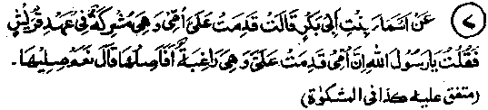
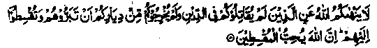
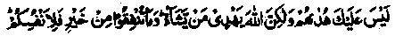

Chapter Three · Section (d): Ahadith concerning maintenance of kinship
6. Helping non-believers

Hadith 7
Asmaa Radhiallaho anha, daughter of Abu Bakr, says that, when Rasulullah Sallallaho alaihe wasallam was negotiating a treaty with the Quraish, her mother, who was a non-believer, came (from Makkah) to visit her (in Madinah) and she asked, ”O Rasulullah, my mother has come to me, expecting me to help her; shall I help her?" Rasulullah Sallallaho alaihe wasallam replied, "Yes, do help her".
Note: In the early days of Islam, Muslims were mercilessly persecuted by the non-believers and books on History are full of painful details of their miseries. Even when the Muslims migrated to Madinah Munawwarah, the non-believers did not allow them to live in peace. They attacked them and harassed them in all possible ways. Once Rasulullah Sallallaho alaihe wasallam came to Makkah with a small number of his Sahabah Radhiallaho anhum, with the sole intention of performing Umrah, but the non-believers prevented their entry into the Sacred City and compelled them to return to Madinah without performing the rites of Umrah. On this occasion, however, Rasulullah Sallallaho alaihe wasallam made a treaty with the Quraish to stop hostilities for a few years, on certain conditions. This is a well-known event of Islamic history, to which Asmaa Radhiallaho anha has referred in the above-quoted Hadith. It was during those days of treaty that the divorced wife of Abu Bakr Radhiallaho anho, who was the mother of Asmaa Radhiallaho anha but who had not embraced Islam, came to visit her in Madinah Munawwarah in the hope of gaining some financial help. As she was a non-believer, Asmaa Radhiallaho anha could not decide whether she should help her or not, and so asked Rasulullah Sallallaho alaihe wasallam about it, who advised her to help her mother. Commenting on this incident, Imaam Khattabi Rahmatullah alaihe writes: "We can infer from this incident that it is necessary to give material help to our kinsmen, irrespective of their being Muslims or non-Muslims". A Tradition says that the following Ayat was revealed concerning this incident:

Allah does not forbid you to show kindness to and deal justly with those who did not make war against you on account of Deen (religion) and did not drive you out from your homes.
Lo! Allah loves those who deal justly. (al-Mumtahinah: 8)
Commenting on the Ayat, Maulana Ashraf Ali Thanwi Rahmatullah alaihe writes, "It refers to the non-believers who have become ‘Zimmis’ (non-Muslim subjects living in a Muslim state) or those non-Muslims who have agreed to live at peace with the Muslims. It is commendable to treat these classes kindly. In this context, ‘Show kindness and deal justly’ means that they be treated kindly, in view of their being subjects of a Muslim state or are reconcilable- Not to speak of a Zinuni, it is incumbent upon a Mo’min to deal justly with every man, Muslim or non-Muslim, and even with animals". (Bayan-ul-Qur’an). The name of Asmaa’s mother is said to be ‘Qailah’ or ‘Qutailah’, daughter of Abdul-Uzza, who had been divorced by Abu Bakr Radhiallaho anho as she had not embraced Islam. Some traditions relate that when she came to visit her daughter Asmaa Radhiallaho anha, with some cheese and purified butter as gifts for her, Asmaa did not allow her to enter her house, but sent a messenger to her half-sister, Aishah Radhiallaho anha requesting her to ask Rasulullah Sallallaho alaihe wasallam whether she (Asmaa) could allow her non-Muslim mother into her house. When asked, Rasulullah Sallallaho alaihe wasallam gave her the permission and the above-quoted Ayat was revealed concerning this incident (Fatah and Durre Manthur). The incident speaks of the firm faith of the ladies of those times, which is really enviable. Just imagine! Her mother comes to her house just to see her (for, she has not yet asked her for any help) but the lady does not allow her to come in till she has ascertained, by sending a messenger and asking Rasulullah Sallallaho alaihe wasallam, whether it is permissible to entertain one’s non-Muslim relatives. Many traditions have it that, in the early days of Islam, the Sahabah did not like to give Sadaqah to their non-Muslim relatives, till the following Ayat was revealed:

Their acceptance of Islam is not thy duty (O Muhammad), but Allah grants whom He wilL And whatsoever good thing you spend (as Sadaqah, etc) it is for yourselves, when you spend not except for seeking Allah’s pleasure. (al-Baqarah: 272)
The Ayat implies that whatever a man spends as Sadaqah, etc., for the sake of Allah Ta'ala may be given to any needy person, Muslim or non-Muslim. Ibne Abbas Radhiallaho anho says: People did not like to treat their non-Muslim relatives with favour, so that they, too, might come into the fold of Islam. Some Of them asked Rasulullah Sallallaho alaihe wasallam about it and, on this occasion, the Ayatwas revealed. I he same subject has appeared in several other Ahadith- (Durre Manthur). Imaam Ghazali Rahmatullah alaihe writes: "Once a fire-worshipper (Magian) Came to Ibrahim Alaihissalam and requested to be entertained as a guest. Ibrahim Alaihissalam refused to entertain him saying, "If you embrace Islam, I shall be pleased to entertain you". The Magian went away, but a revelation came to Ibrahim Alaihissalam from Allah Ta'ala saying, ‘Ibrahim, you would not feed a non-Muslim for a night until he accepted your creed, while I have been feeding him for the last seventy years, notwithstanding his being a non-believer. It would not have mattered much if you had given him a meal". Ibrahim Alaihissalam got up at once and went in search of the Magian and asked him to come back and share a meal with him. The Magian came back and, having taken the meal, asked Ibrahim Alaihissalam what had made him go out and search for him. At this, Ibrahim Alaihissalam told him about the revelation, on hearing which the fire worshipper embraced Islam and said, "As He has been treating me so kindly, I accept Islam. Please give me necessary instructions". (Ihya). A Hadith relates three matters, which are a must for everybody: (1) treating one’s parents with kindness, be they Muslims or non-Muslims; (2) fulfilling one’s undertaking, whether it is for a Muslim or a non-Muslim; (3) returning a thing kept in trust, to its owner, be he a Muslim or a non-Muslim. (Jaame-us-Saghir). The three divines, Muhammad Ibne Hanafiyyah, Ataa and Qatadah Rahmatullah alaihim, are agreed that the following Ayat from the Qur’an requires the Muslims to deal kindly with those of their relatives who are Jews, Christians or other non-Muslims:
Except that you should deal kindly with your friends. (al-Ahzaab: 6)